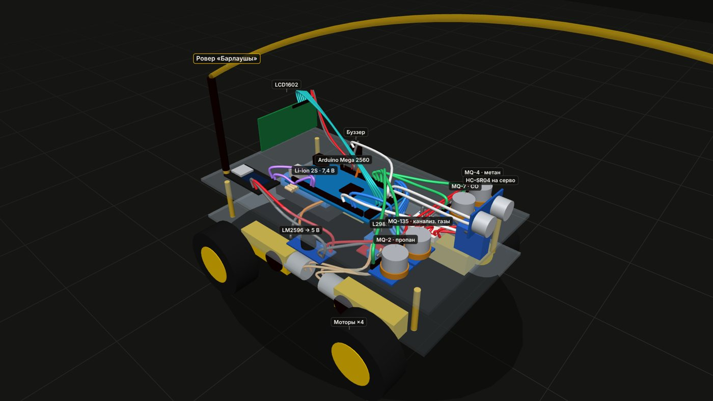

Автономный разведчик газа для канализационных колодцев, коллекторов, теплотрасс и подземных выработок. Меряет метан, угарный газ и канализационные газы по пути и передаёт данные по LoRa — прямо на эту страницу.
В колодец, коллектор или выработку первым спускается человек. Метан, сероводород и угарный газ не видно, а у многих нет запаха — человек узнаёт об опасности, когда уже поздно. Следом за ним спускаются спасатели.
При очистке канализационного колодца произошёл выброс газа (предположительно метан). Один коммунальщик погиб, второго увезли в тяжёлом состоянии.
Метан скопился в выработке и взорвался от искры оборудования. Правительство поручило внедрить автоматические системы контроля газов.
По данным NIOSH (США), большинство смертей в замкнутых пространствах — спасатели. В расследованных случаях воздух перед входом не проверяли.
«Барлаушы» по-казахски — разведчик. Бригада ставит его у входа, и он едет внутрь вместо человека.
Прогрев и калибровка датчиков по чистому воздуху, затем кнопка «Старт».
Каждые 50 см остановка и замер четырёх датчиков. Препятствие — объезжает ультразвуком.
Опасный газ — стоп, сирена, отъезд назад из зоны. Решение принимает человек.
Карта газа по тоннелю и вердикт «вход разрешён / запрещён» — с доказательством, что проверка была.

Покрутить 3D-модель со всеми проводами →
| Arduino Mega 2560 | мозг робота |
| MQ-4 · MQ-7 · MQ-135 · MQ-2 | газы |
| L298N + 4 мотора | движение |
| HC-SR04 на сервоприводе | объезд препятствий |
| 2 × LilyGO LoRa32 | радиосвязь робот ↔ база |
| LCD1602 + буззер | экран и сирена на роботе |
| Li-ion 2S + LM2596 | питание 7,4 В и 5 В |
✔ Логика, связь и софт — рабочие, показываем вживую.
▲ Датчики MQ — недорогие и несертифицированные, ppm оценочные; кислород они не измеряют.
▲ Расстояние считается по времени езды (≈ метры), энкодеров пока нет.
➜ Промышленная версия: электрохимические 4-газовые сенсоры (O₂, H₂S, CO, CH₄), взрывозащищённый корпус, одометрия, гусеничное шасси.
Очистка и ремонт канализационных колодцев и коллекторов.
Тепловые камеры, теплотрассы, подвалы.
Проверка выработок перед входом смены.
Разведка перед спуском спасателей.
Модель: продажа робота бригаде + облачный журнал проверок и нарядов-допусков по подписке.
Идея, питч, калибровка датчиков и данные
Железо и прошивка Arduino / ESP32
Сайт, пульт и финал питча